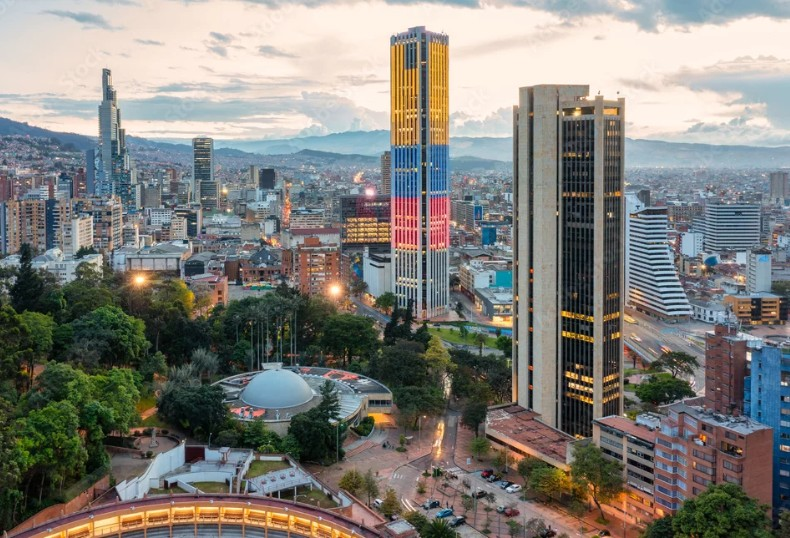
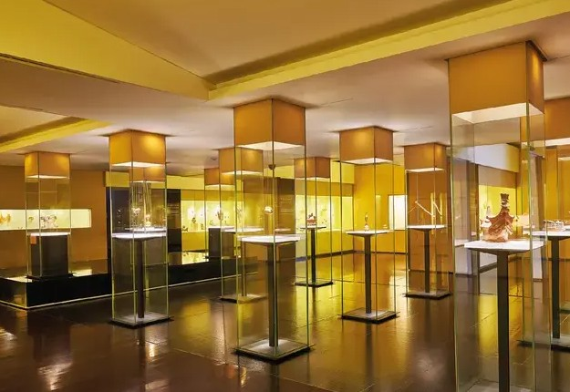
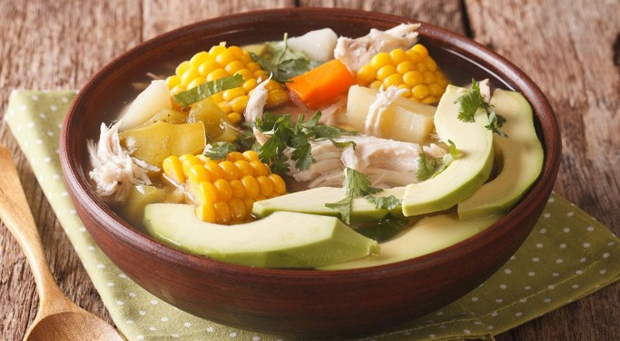
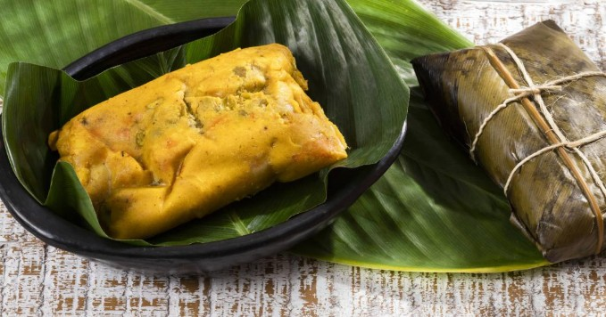
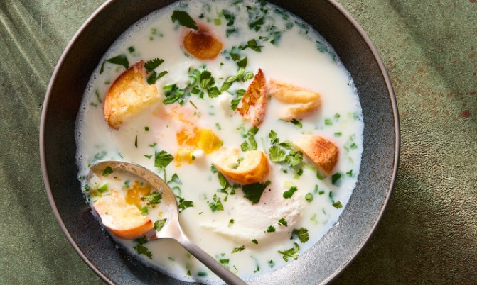
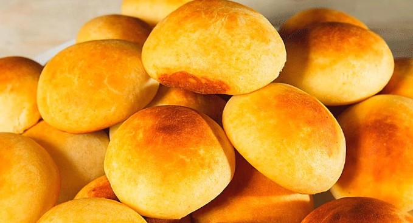

Bogotá es una de las ciudades más altas del mundo, ubicada a aproximadamente 2.600 metros sobre el nivel del mar. Esta altitud le da un ambiente único, con aire fresco y vistas impresionantes de los cerros que rodean la ciudad.

La capital también se destaca por tener una de las redes de ciclovías más grandes de Latinoamérica. Cada semana, muchas de sus principales vías se cierran para que las personas puedan disfrutar de la bicicleta, el deporte y el aire libre.
Además, Bogotá alberga el Museo del Oro, uno de los más importantes del mundo en su tipo, donde se exhiben valiosas piezas precolombinas que reflejan la riqueza cultural del país.
Conoce más sobre Bogotá Ver gastronomíaSu clima es frío pero muy cambiante, ya que en un mismo día puede pasar del sol a la lluvia en cuestión de horas. Esto hace que la ciudad tenga una atmósfera dinámica y siempre impredecible.
| Lugar | Ubicación | Características |
|---|---|---|
| Monserrate | Cerros Orientales | Santuario en la cima con vista impresionante de toda la ciudad. |
| La Candelaria | Centro histórico | Casas coloniales, calles coloridas y mucha historia cultural. |
| Parque Simón Bolívar | Centro geográfico de la ciudad | Uno de los parques urbanos más grandes, ideal para descansar y eventos. |
El Museo del Oro es uno de los espacios culturales más importantes de Colombia, ubicado en el centro histórico de la ciudad. Alberga una impresionante colección de piezas de oro y objetos precolombinos que reflejan la riqueza de las culturas indígenas. Este lugar ofrece una experiencia única para conocer la historia y el legado ancestral del país, convirtiéndose en una visita imperdible para quienes desean conectar con la cultura colombiana.

Bogotá es conocida por su variada gastronomía andina, que combina tradición y cultura. Entre sus platos más representativos se encuentran el ajiaco, el tamal santafereño, la changua y las almojábanas.

Ajiaco

Tamal Santaferreño

Changua

Almojábana